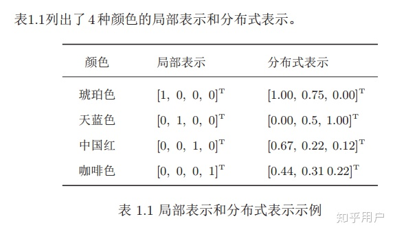

PyTorch
概述
目标
实现基于pyTorch的学习系统
理解深度学习与神经网络的概念
要求
算法+概率论
Python基础
引入
什么是智能
做快速决策前，通过已有或接受的信息（内部+外部信息）来进行推理的过程。将具象的事物【例如照片】与抽象的事物【例如单个词语】连接起来。
信息->事物
常用手段
监督学习
常用的算法思维方式
1.穷举法
2.贪心法
3.分治
4.动态规划
DataSet->算法->训练数据->验证->部署
深度学习
是机器学习的一个分支
构建学习系统的历史过程
1.基于规则的系统
基于规则的学习系统，输入->手动编写的程序->输出
例如，求其原函数，基于已有的知识库，各种积分法则，定理等等。
2.经典的机器学习方法
输入->手动编写的特征->基于特征的映射->输出

新的挑战
1.手动编写特征有极限
2.SVN不能很好地解决大数据问题
3.对非结构型数据的应用需求增大

3.表现学习
输入->特征->基于特征的映射->输出
维度诅咒
输入中特征(feature)越多所需样本量越多。例如，一维10->二维 ->三维->...
流形Manifold
对于三维空间中的物体，较扁平平滑而且可导，则可以把这个三维空间映射到二维空间
4.深度学习
输入->简单特征->更多抽象特征的额外层->基于特征的映射->输出
经典机器学习方法
神经网络的研究
研究发现，猫的大脑对于切换的画面有较强的兴奋。后来发现，哺乳动物的神经元是分层的，首先是对变化的初步感知，然后才是识别物体
人工神经元

人工神经网络

感知器
原子计算
进行一系列原子计算（加减乘除矩阵运算等）
正向传播/前馈过程

a=1,b=1
=>c=3,d=3
=>e=9
反向传播/反馈过程
求导
e=9
=>
=>
反向传播，链式求导，在图中传播这些导数，并且将它乘起来，具有灵活性
LeNet-5

发展历程

线性模型
1.数据集
2.建立模型
3.训练
4.应用
已知如下表格，通过机器学习预测x=4时y=?
| x(小时) | y(得分) |
|---|---|
| 1 | 2 |
| 2 | 4 |
| 3 | 6 |
| 4 | ？ |
x=1,2,3时的数据集称为训练集，x=4时的数据集称为测试集，这是一个典型的监督学习
所有机器学习都有训练集(x,y)【告诉你输入和输出】和测试集(x)【仅告诉你输入】检测是否符合要求。在竞赛中，往往会在训练集中切分出一部分作为开发集/验证集，作为开发和调试使用
由于数据集同一类型过于集中，有可能会产生数据的过拟合现象【比如开个美颜，换个角度就认不出你了，现象：训练结果先降后增】，所以我们要进行泛化。
评估模型
线性模型
评估模型误差
计算预估w与实际的差值【这里指差别，不是单纯的求差】来评估误差

计算误差
简单的非零训练误差
| x(小时) | y(得分) | 预测y值 | 损失(w=3) | 预测y值 | 损失（w=2) |
|---|---|---|---|---|---|
| 1 | 2 | 3 | 1 | 2 | 0 |
| 2 | 4 | 6 | 4 | 4 | 0 |
| 3 | 6 | 9 | 9 | 6 | 0 |
| 平均值=14/3 | 平均值=0 | ||||
| x(小时) | y(得分) | 预测y值 | 损失(w=1) | 预测y值 | 损失（w=0) |
| 1 | 2 | 1 | 1 | 0 | 4 |
| 2 | 4 | 2 | 4 | 0 | 16 |
| 3 | 6 | 3 | 9 | 0 | 36 |
| 平均值=14/3 | 平均值=56/3 |
均方误差（MSE Mean Square Error)
| x(小时) | w=0 | w=1 | w=2 | w=3 | w=4 |
|---|---|---|---|---|---|
| 1 | 4 | 1 | 0 | 1 | 4 |
| 2 | 16 | 4 | 0 | 4 | 16 |
| 3 | 36 | 9 | 0 | 9 | 36 |
| MSE | 18.7 | 4.7 | 0 | 4.7 | 18.7 |
穷举法
import numpy as np import matplotlib.pyplot as plt #数据集 x_data=[1.0,2.0,3.0] y_data=[2.0,4.0,6.0] #线性模型y^=x*w def forward(x): return x*w #损失函数loss=(x*w-y)^2 def loss(x,y): y_pred=forward(x) return (y_pred-y)*(y_pred-y) w_list=[]#权重 mse_list=[]#权重损失值 #采样0.0-4.1间隔为0.1 for w in np.arange(0.0,4.1,0.1): print('w=',w) l_sum=0 #从数据集中取数据并拼成所需的val值 for x_val,y_val in zip(x_data,y_data): #预测 y_pred_val=forward(x_val) #计算损失 loss_val=loss(x_val,y_val) #求和 l_sum+=loss_val print('\t',x_val,y_val,y_pred_val,loss_val) print('MSE=',l_sum/3) w_list.append(w) mse_list.append(l_sum/3) plt.plot(w_list,mse_list) plt.ylabel('Loss') plt.xlabel('w') plt.show()

练习

梯度下降算法
分治法：

贪心：
每一次迭代都朝着下降最快的方向进行迭代。
梯度：
更新：

对于贪心，是有风险的，比如下图中，可能会停止在局部最优点。对于鞍点，w一直不变。

损失函数的导数：
下降梯度：
由上述式子，可以看出，若要避免产生贪心的弊端，就要采取随机选取N的方式，但是这样时间花费太大，所以折中考虑性能和时间，将数据集分成许多Mini-Batch小块进行随机操作。
神经网络
对于线性模型
神经元

神经网络

为什么要使用非线性层？
由上文，线性反复迭代只能的到线性。和迭代一次效果是一样的，还难以做到修正的效果。
正向/反向传播算法


在pytorch中，tensor是一个很重要的动态计算图的组成部分。它包含了数据以及反向的梯度。【梯度被存储在节点中，节点，梯度，损失，各自存储】
import torch x_data=[1.0,2.0,3.0] y_data=[2.0,4.0,6.0] #创建tensor变量，只有一个值 w=torch.Tensor([1.0]) #需要计算梯度 w.requires_grad=True
使用PyTorch
1.准备数据集
2.设计模型
计算
3.构建损失及优化的对象
使用pytorch 的API
4.训练周期

广播机制
由于有很多组以及x，w，所以，很自然的我们将所有的，x各自拼接成矩阵。
即：
演示：
不妨设(注W可能不仅为向量，可能是矩阵但要保证W是n*m,X是m*1)
则W会被广播机制拓展为
解得
b是单个实数或向量，但是python拥有广播机制，可以自动将其扩展一个符合大小的矩阵。
假设B=b
B会由广播机制拓展为：
以上的操作
也被称之为线性单元。
线性单元
在Pytorch中，有这样一个类来表示线性单元
class torch.nn.Linear(in_features,out_features,bias=True)
用途：
这个类用于将输入的数据进行线性变换。即y=Ax+b
参数：
【初始化参数】
in_features--即将输入的参数的尺寸size
out_features--输出的参数的尺寸size
bias=True--是否开启后面的尾缀b，False表示成比例,即b=0
【注：bias--b】
Shape要求
输入：(N,*,in_features)
*表示任何额外的维度
输出：(N,*,out_features)
除了最后一维，其余要求和输入相同。
比如
当然也常常使用W的转置
损失函数
MSELoss
矩阵表达式为：
即
在Pytorch中，有这样一个类来表示上述计算
class torch.nn.MSELoss(size_average=True,reduce=True)
用途：
封装了上述函数，计算平均损失，用来得到目标y。
参数：
size_average：是否开启求平均
reduce：是否返回标量
样式：
此时N是batch_size
缺点
使用MSE的一个缺点就是其偏导值在输出概率值接近0或者接近1的时候非常小，这可能会造成模型刚开始训练时，偏导值几乎消失。
优化器
SGD
class torch.optim.SGD(params, lr=, momentum=0, dampening=0, weight_decay=0, nesterov=False)
应用
实现随机梯度下降算法（momentum可选）。
参数：
params (iterable) – 待优化参数的iterable或者是定义了参数组的dict
lr (float) – 学习率
momentum (float, 可选) – 动量因子（默认：0）
weight_decay (float, 可选) –正则化 权重衰减（L2惩罚）（默认：0）
dampening (float, 可选) – 动量的抑制因子（默认：0）
nesterov (bool, 可选) – 使用Nesterov动量（默认：False）
其他优化器
- torch.optim.Adagrad
- torch.optim.Adam
- torch.optim.Adamax
- torch.optim.ASGD
- torch.optim.LBFGS
- torch.optim.RMSprop
- torch.optim.Rprop
- torch.optim.SGD
注意：多去查阅Pytorch官方文档
代码
import torch #3×1矩阵 #1.准备数据集 x_data=torch.Tensor([[1.0],[2.0],[3.0]]) y_data=torch.Tensor([[2.0],[4.0],[6.0]]) #继承自nn.model是神经网络模型的基础 #2.设计模型模块 class LinearModel(torch.nn.Module): #初始化 def __init__(self): super(LinearModel,self).__init__() #构造对象（包含__call__()构造函数） self.linear=torch.nn.Linear(1,1) #函数重载 def forward(self,x): y_pred=self.linear(x) return y_pred #Callable model =LinearModel() #均方损失函数，size_average=False损失求和,否则求均值。reduce是否求和降维 #3.构建损失函数和优化器 criterion=torch.nn.MSELoss(size_average=False) #优化模型model.parameters()获取你的model中的所有参数 optimizer=torch.optim.SGD(model.parameters(),lr=0.01) #与前面的for x,y in zip(x_data,y_data):...等价 #4.训练循环 for epoch in range(100): #1.前馈中计算y^ y_pred=model(x_data) #2.计算损失 loss=criterion(y_pred,y_data) print(epoch,loss) #3.梯度归零 optimizer.zero_grad() #4.反向传播 loss.backward() #5.更新 optimizer.step() print('w=',model.linear.weight.item()) print('b=',model.linear.bias.item()) #测试预测 x_test=torch.Tensor([[4.0]]) y_test=model(x_test) print('y_pred=',y_test.data)
最终x=4时的预测结果
w= 1.9999569654464722
b= 9.796061203815043e-05
y_pred= tensor([[7.9999]])
Logistic回归/分类
获取数据集
比如MNIST数据集（手写数字分类）等等。
结果结果可能不能完全映射到一个数字上(因为7和9两个数字手写上更加接近)，所以输出会是一系列概率值P(0),P(1),P(2),...P(9)
#下载MNIST数据集 import torchvision #训练集，tain=True，download=True，若在包中找不到该数据集，开启自动下载 train_set=torchvision.datasets.MNIST(root='../dataset/mnist',train=True,download=True) #测试集 test_set=torchvision.datasets.MNIST(root='../dataset/mnist',train=False,download=True)
比如CIFAR-10数据集（32*32彩色小图片的简单分类）。
#下载CIFAR10数据集 import torchvision #训练集 train_set=torchvision.datasets.CIFAR10(...) #测试集 test_set=torchvision.datasets.CIFAR10(...)
回归
回归的结果,而分类的。
原来的梯度下降算法，结果是这样的：
| x(小时) | y(分数) |
|---|---|
| 1 | 2 |
| 2 | 4 |
| 3 | 6 |
| 4 | ? |
现在的线性回归算法，应该的结果是这样的：
| x(小时) | y(True/False) |
|---|---|
| 1 | 0(False) |
| 2 | 0(False) |
| 3 | 1(True) |
| 4 | ? |
在分类问题中，模式的输出是在所有确定类别中的元素概率。且所有的概率均大于等于0，小于等于1。
饱和函数
logisic函数
本来上文中，，现在设，。
图像如图所示：

所以，一次被称之为线性单元，一次被称之为logistic回归单元
其他饱和函数

损失函数：
线性回归损失函数：MSELoss
二分类的损失函数：BCELoss
性质：
分类讨论研究其性质
①y=0时
y=P(class=1)=0
②y=1时
y=P(class=0)=1
易知：
这个和反映了分布间的差异大小
所以Mini-Batch的二分类损失函数公式为
| y | BEC Loss | |
|---|---|---|
| 1 | 0.2 | 1.609 |
| 1 | 0.8 | 0.223(接近y,损失小) |
| 0 | 0.3 | 0.357 |
| 0 | 0.7 | 1.204 |
| Mini-Batch Loss | 0.8483 |
logistic回归函数（单特征量）计算代码
import torch import torch.nn.functional as F #3×1矩阵 #1.准备数据集 x_data=torch.Tensor([[1.0],[2.0],[3.0]]) y_data=torch.Tensor([[0],[0],[1]]) #继承自nn.model是神经网络模型的基础 #2.设计模型模块 class LogisticRegressionModel(torch.nn.Module): #初始化 def __init__(self): super(LogisticRegressionModel, self).__init__() #构造对象（包含__call__()构造函数） self.linear=torch.nn.Linear(1,1) #函数重载 def forward(self,x): #y^=σ(w*x+b) #注：旧版F.sigmoid(self.linear(x)) y_pred=torch.sigmoid(self.linear(x)) return y_pred #Callable model =LogisticRegressionModel() #交叉熵损失函数，size_average=False损失求和,否则求均值。reduce是否求和降维 #3.构建损失函数和优化器 老师用的老版本size_average=False,现版本reduction='sum’ criterion=torch.nn.BCELoss(reduction='sum') #优化模型model.parameters()获取你的model中的所有参数 optimizer=torch.optim.SGD(model.parameters(),lr=0.01) #与前面的for x,y in zip(x_data,y_data):...等价 #4.训练循环 for epoch in range(1000): #1.前馈中计算y^ y_pred=model(x_data) #2.计算损失 loss=criterion(y_pred,y_data) #print(epoch,loss.item()) #3.梯度归零 optimizer.zero_grad() #4.反向传播 loss.backward() #5.更新 optimizer.step() import numpy as np import matplotlib.pyplot as plt #0-10取200个点 x=np.linspace(0,10,200) #200*1的矩阵，类似于reshape x_t=torch.Tensor(x).view((200,1)) y_t=model(x_t) y=y_t.data.numpy() plt.plot(x,y) plt.plot([0,10],[0.5,0.5],c='r') plt.xlabel('Hours') plt.ylabel('Probability of Pass') plt.grid() plt.show()
结果：

多维特征输入
数据
样本Sample
一条条数据+结果，一条数据包含多个信息【特征/字段】。
分类Record
随后的分类结果。
例如，本章采用的数据集是糖尿病病人的数据集。图示如下：
横着的是一条条样本
竖着的是一个个特征/字段

多特征logistic回归
上一章说明了单特征的logistic回归，同理，多特征logistic回归只需要将上文中的变量全部转换为向量/矩阵即可。
所以易得Z的向量运算公式
空间维度变换
空间转换，将N维映射到M维上。
Pytorch函数实现空间维度变换
例如：8维转变为2维
self.linear=torch.nn.Linear(8,2)
首尾相连一步步空间维度转换
将这些维度变换首尾相连，通过非线性变换，将8维降到1维。
8->6->2->1。
很明显的，可以分成多步首尾相连维度逐层递减。当然，也可以局部放大特征后在逐步进行缩小。可以这样：
8->24->12->6->2->1
层数不一定越多越好，过多可能就会过拟合。
但是该如何更好地取得层数呢？超参数的搜索！
开发注意：!!!
1.抠书本
多读书，西瓜书，花书等等
2.读文档
理解基本的架构理念--泛化能力
代码：

import torch import numpy as np #读取文件，以“,”为分隔符，N卡一般只支持32位浮点数 #1.准备数据 xy=np.loadtxt('diabetes.csv.gz',delimiter=',',dtype=np.float32) x_data=torch.from_numpy(xy[:,:-1]) y_data=torch.from_numpy(xy[:,[-1]]) #2.设计模型模块 class Model(torch.nn.Module): #初始化 def __init__(self): super(Model, self).__init__() #构造对象 8*6 6*4 4*1三层 self.linear1=torch.nn.Linear(8,6) self.linear2=torch.nn.Linear(6,4) self.linear3=torch.nn.Linear(4,1) self.sigmoid=torch.nn.Sigmoid() self.activate=torch.nn.ReLU() #函数重载 def forward(self,x): #y^=σ(w*x+b) 反复迭代多层（激活函数） x=self.activate(self.linear1(x)) x=self.activate(self.linear2(x)) x=self.sigmoid(self.linear3(x)) return x #Callable model =Model() #3.构建损失函数和优化器 旧版写法size_average=True criterion=torch.nn.BCELoss(reduction='mean') #优化模型model.parameters()获取你的model中的所有参数 optimizer=torch.optim.SGD(model.parameters(),lr=0.01) #4.训练循环 for epoch in range(1000): #1.前馈中计算y^ y_pred=model(x_data) #2.计算损失 loss=criterion(y_pred,y_data) print(epoch,loss.item()) #3.梯度归零 optimizer.zero_grad() #4.反向传播 loss.backward() #5.更新 optimizer.step()
各种激活函数

数据集
Dataset
数据集+索引
DataLoader
加载+Mini_Batch
取得数据集过程

代码
import torch import numpy as np #Dataset抽象类,DataLoader用于加载数据 from torch.utils.data import Dataset,DataLoader #1.准备数据 class DiabetesDataset(Dataset): def __init__(self,filepath): #1.获取全部数据 #2.文件名列表或标签列表 xy=np.loadtxt(filepath,delimiter=',',dtype=np.float32) #print(xy) #shape->(N,9) shape[0]=N self.len=xy.shape[0] #:-1到最后第二个为止,m个数据m*8矩阵 self.x_data=torch.from_numpy(xy[:,:-1]) #[-1]最后一个,m*1矩阵 self.y_data=torch.from_numpy(xy[:,[-1]]) #支持索引下标操作 def __getitem__(self,index): return self.x_data[index],self.y_data[index] #获得长度 def __len__(self): return self.len dataset=DiabetesDataset('diabetes.csv.gz') #初始化加载器,自动转换成tensor train_loader=DataLoader(dataset=dataset,#数据集 batch_size=32,#Mini-Batch大小 shuffle=True,#是否随机读取/打乱 num_workers=2)#并行进程个数 #2.设计模型模块 class Model(torch.nn.Module): #初始化 def __init__(self): super(Model, self).__init__() #构造对象 8*6 6*4 4*1三层 self.linear1=torch.nn.Linear(8,6) self.linear2=torch.nn.Linear(6,4) self.linear3=torch.nn.Linear(4,1) self.sigmoid=torch.nn.Sigmoid() self.activate=torch.nn.ReLU() #函数重载 def forward(self,x): #y^=σ(w*x+b) 反复迭代多层（激活函数） x=self.activate(self.linear1(x)) x=self.activate(self.linear2(x)) x=self.sigmoid(self.linear3(x)) return x #Callable model =Model() #3.构建损失函数和优化器 旧版写法size_average=True criterion=torch.nn.BCELoss(reduction='mean') #优化模型model.parameters()获取你的model中的所有参数 optimizer=torch.optim.SGD(model.parameters(),lr=0.01) #4.训练循环 #windows上运行需要加上这一行，防止线程出现RuntimeError的错误 if __name__ == '__main__': for epoch in range(10): #获得trainloader的迭代器，从0开始 #纠错，老师讲课好像是直接enumerate(train_loader,0)会取不到data #下两行也可以写成for i,(inputs,labels) in enumerate(train_loader.dataset,0): for i,data in enumerate(train_loader.dataset,0): #1.准备数据,获取输入x与标签（结果y） inputs,labels=data #2.正向传播 y_pred=model(inputs) loss=criterion(y_pred,labels) if i==720: print(epoch,i,loss.item()) #3.梯度归零 optimizer.zero_grad() #4.反向传播 loss.backward() #5.更新 optimizer.step()
结果
0 720 0.4055490493774414
1 720 0.38245439529418945
2 720 0.30611085891723633
3 720 0.1746852695941925
4 720 0.09982635825872421
5 720 0.07228878885507584
6 720 0.06219954416155815
7 720 0.058494314551353455
8 720 0.056936316192150116
9 720 0.05493342503905296
其他有趣的数据集
- MNIST
- Fashion-MNIST
- EMNIST
- COCO
- LSUN
- ImageFolder
- DatasetFolder
- Imagenet-12
- CIFAR
- STL10
- PhotoTour
练习

多分类问题
从最经典的案例出发
多分类问题中的图像识别，有一个最为经典的数据集，就是识别手写的0-9的数字了。
那么我们上述所有的方法都是基于二分类问题的，那么如果要求多个分类呢？我们该如何设计？
如果使用上文的sigmoid，可以求出，但是这些的分布是不满足概率条件的【即不满足所有的和为1，或概率不一定大于0】，而且，可能有好几种的概率都特别大，所以我们希望能够使输出相互抑制，形成竞争型关系，从而显示出其概率。
Softmax层
softmax--归一化指数函数
这样就能使其概率相互抑制，所有概率大于0且和为1。

损失函数
NLLLoss:
经过上述的softmax计算我们获得了一个概率向量，与训练集的结果Y构成如下的损失函数：
代码：
import numpy as np y=np.array([1,0,0]) z=np.array([0.2,0.1,-0.1]) #---CrossEntropyLoss交叉熵损失---# #y_hat=e^z/sum(e^z)，使其满足概率分布，softmax y_pred=np.exp(z)/np.exp(z).sum() #-ylog(y_hat) loss=(-y*np.log(y_pred)).sum() #-------------------------------# print(loss)
结果
0.9729189131256584
torch.nn.CrossEntropyLoss()
NLLLoss+softmax。
简单的交叉熵使用实例：
代码：
import torch #长整型张量 y=torch.LongTensor([0]) z=torch.Tensor([[0.2,0.1,-0.1]]) #交叉熵损失（上文是numpy的实现，本节是pytorch的实现） criterion=torch.nn.CrossEntropyLoss() loss=criterion(z,y) print(loss)
结果
tensor(0.9729)
具体示例：
batch_size=3
代码：
import torch criterion=torch.nn.CrossEntropyLoss() #假设标签为2,0,1 y=torch.LongTensor([2,0,1]) y_pred1=torch.Tensor([[0.1,0.2,0.9],#0.9概率为2 [1.1,0.1,0.2],#1.1概率为0 [0.2,2.1,0.1]])#2.1概率为1【预测结果不错】 y_pred2=torch.Tensor([[0.8,0.2,0.3],#0.8概率为2 [0.2,0.3,0.5],#0.5概率为1 [0.2,0.2,0.5]])#0.5概率为1【预测结果不佳】 l1=criterion(y_pred1,y) l2=criterion(y_pred2,y) print("Batch Loss1=",l1.data,"\nBatch Loss2=",l2.data)
结果
Batch Loss1= tensor(0.4966)
Batch Loss2= tensor(1.2389)
练习：

MNIST数据集
所有数据是由28*28=784个像素点组成。每个点用不同数值表示其亮度大小，具体如图所示：

多通道的数据
对于一张纯黑白的图片数据，仅有单通道【即一个图层】仅包含一个W×H的矩阵。
但是现在保存的彩色照片都是由三种颜色RGB的三通道（Channel）叠合而成的，所以形成的矩阵为W×H×C。不过为了进行高效的数据转换，我们经常讲数据矩阵转换为C×W×H。
代码：
import torch import torchvision #准备构建数据加载器 from torchvision import transforms from torchvision import datasets from torch.utils.data import DataLoader #使用ReLU() import torch.nn.functional as F #优化器 import torch.optim as optim batch_size=64 #Compose将所有[]内的转变为C（通道）*W（宽）*H（高）的张量 transform=transforms.Compose([ transforms.ToTensor(),#将PIL图像转换为张量 #标准化0.1307->平均值 0.3081->标准差/前人计算好的 transforms.Normalize((0.1307, ),(0.3081, )) ])
标准化0.1307->mean 0.3081->std
此时标准化像素的公式为：
train_dataset=datasets.MNIST(root='../dataset/mnist/', train=True, download=True, transform=transform) train_loader=DataLoader(train_dataset, shuffle=True, batch_size=batch_size) test_dataset=datasets.MNIST(root='../dataset/mnist/', train=False, download=True, transform=transform) test_loader=DataLoader(train_dataset, shuffle=False, batch_size=batch_size) class Net(torch.nn.Module): def __init__(self): super(Net,self).__init__() self.l1=torch.nn.Linear(784,512) self.l2=torch.nn.Linear(512,256) self.l3=torch.nn.Linear(256,128) self.l4=torch.nn.Linear(128,64) self.l5=torch.nn.Linear(64,10) def forward(self,x): #N*1*28*28转变为N*784的矩阵,-1自动计算第N*1个矩阵 x=x.view(-1,784) #激活 x=F.relu(self.l1(x)) x=F.relu(self.l2(x)) x=F.relu(self.l3(x)) x=F.relu(self.l4(x)) #最后一层不激活，接入到softmax return self.l5(x) model=Net() #3.构建损失函数和优化器 旧版写法size_average=True criterion=torch.nn.CrossEntropyLoss() #lr=0.01学习率 momentum=0.5冲量优化 optimizer=optim.SGD(model.parameters(),lr=0.01,momentum=0.5) def train(epoch): running_loss=0.0 for batch_idx,data in enumerate(train_loader,0): inputs,target=data optimizer.zero_grad() #正向传播+反向传播+更新 outputs=model(inputs) loss=criterion(outputs,target) loss.backward() optimizer.step() running_loss+=loss.item() if(batch_idx%300==299): print('[%d,%5d] loss:%.3f'%(epoch+1,batch_idx+1,running_loss/300)) running_loss=0.0 def test(): correct=0 total=0 #测试集不需要开启梯度计算 with torch.no_grad(): for data in test_loader: images,labels=data outputs=model(images) #沿着第1维度（横向）寻找最大可能的解 _,predicted=torch.max(outputs.data,dim=1) #总共的值 total+=labels.size(0) #统计猜对的值 correct+=(predicted==labels).sum().item() print('Accuracy on test set:%d %%'%(100*correct/total)) if __name__ == '__main__': for epoch in range(10): train(epoch) test()
结果：
[1, 300] loss:2.179
[1, 600] loss:0.710
[1, 900] loss:0.401
Accuracy on test set:90 %
[2, 300] loss:0.310
[2, 600] loss:0.252
[2, 900] loss:0.224
Accuracy on test set:94 %
[3, 300] loss:0.181
[3, 600] loss:0.167
[3, 900] loss:0.142
Accuracy on test set:96 %
[4, 300] loss:0.129
[4, 600] loss:0.116
[4, 900] loss:0.115
Accuracy on test set:97 %
[5, 300] loss:0.096
[5, 600] loss:0.083
[5, 900] loss:0.096
Accuracy on test set:97 %
[6, 300] loss:0.074
[6, 600] loss:0.074
[6, 900] loss:0.071
Accuracy on test set:98 %
[7, 300] loss:0.058
[7, 600] loss:0.060
[7, 900] loss:0.063
Accuracy on test set:98 %
[8, 300] loss:0.049
[8, 600] loss:0.045
[8, 900] loss:0.050
Accuracy on test set:98 %
[9, 300] loss:0.036
[9, 600] loss:0.042
[9, 900] loss:0.041
Accuracy on test set:99 %
[10, 300] loss:0.031
[10, 600] loss:0.032
[10, 900] loss:0.034
Accuracy on test set:99 %
练习：

卷积神经网络
基础【串行结构】
全连接网络
全是线性层连接的网络称之为全连接网络，例如：
self.l1=torch.nn.Linear(784,512) self.l2=torch.nn.Linear(512,256) self.l3=torch.nn.Linear(256,128) self.l4=torch.nn.Linear(128,64) self.l5=torch.nn.Linear(64,10)
任意输出节点都要参与到下一轮节点的计算上。784->512->256->128->64->10。
但是每一次都直接使用线性降维，运算太大了。所以提出了下一个结构。
二维卷积神经网络
按照原始的结构，来保留空间结构。图像->三维张量。
然后经过2*2的下采样，减少元素数量，降低运算的需求。


这个框【卷积核】反复滑动，对每一个块进行扫描卷积，来综合每个点的信息，减少运算成本。
示例
输入 卷积核 输出
卷积过程示例：
取左上角的3*3矩阵先进行与卷积核相乘卷积
即：3·1+4·2+6·3+2·4+4·5+6·6+1·7+6·8+7·9=211，所以输出第一个是就是211
所以，三通道就是将三个通道的矩阵与卷积核进行卷积【卷积核不一定相同】，将卷积后的结果相加依然能得到单通道的3*3矩阵【这里的维度是5-2=3】，从而大大减少了计算量。多通道->过滤器->特征图->拼接->
卷积过程示意图：

卷积层
压缩
设，输入数据为：。
每层降维需要m个过滤器【卷积核】它们的大小为：。
即，若输入n维通道，则由n个卷积核组成1个filter。因为1个filter可以将n个维度压缩到1维。
那么通过m个filter就将整个数据压缩成
维度演示代码：
import torch #n层图像 m个卷积核【必要】 in_channels,out_channels=5,10 #图像大小 width,height=100,100 #卷积核大小【必要】 kernel_size=3 #注：pytorch只接受小批量数据 batch_size=1 input=torch.randn(batch_size, in_channels, width, height) #创建卷积层 conv_layer=torch.nn.Conv2d(in_channels, out_channels, kernel_size=kernel_size) output=conv_layer(input) print(input.shape) print(output.shape) print(conv_layer.weight.shape)
结果：
torch.Size([1, 5, 100, 100])
torch.Size([1, 10, 98, 98])
torch.Size([10, 5, 3, 3])
填充
如果想输出时过得更大的维数来精确信息，我们该怎么做呢？
当然是将，输出往外扩充一格啦，然后将所有扩充的格数填0就好了！
输入 卷积核 输出
torch.nn.Conv2d
为此Pytorch提供了这个torch.nn.Conv2d函数，来方便的进行卷积
示意代码：
import torch input=[3,4,6,5,7, 2,4,6,8,2, 1,6,7,8,4, 9,7,4,6,2, 3,7,5,4,1] #Batch=1 Channel=1 Width=5 Height=5 input=torch.Tensor(input).view(1,1,5,5) #卷积层 输入通道=1 输出通道=1 卷积核大小=3 扩充填0=1【3*3变成5*5】 不需要偏移 conv_layer=torch.nn.Conv2d(1,1,kernel_size=3,padding=1,bias=False) #Output=1 Input=1 Width=3 Height=3 kernel=torch.Tensor([1,2,3,4,5,6,7,8,9]).view(1,1,3,3) #将自定义的卷积核权数赋值给卷积层 conv_layer.weight.data=kernel.data output=conv_layer(input) print(output)
结果：
tensor([[[[ 91., 168., 224., 215., 127.],
[114., 211., 295., 262., 149.],
[192., 259., 282., 214., 122.],
[194., 251., 253., 169., 86.],
[ 96., 112., 110., 68., 31.]]]], grad_fn=<ThnnConv2DBackward>)
Stride跳步
将torch.nn.Conv2d中的参数stride=2【默认=1，即逐块扫描】，将中心一次走两格跳着扫描【比如卷积核中心从(2,2)走到了(2,5)】。这样就能有效的降低维度和运算量【不过信息可能会丢失】
示意代码：
import torch input=[3,4,6,5,7, 2,4,6,8,2, 1,6,7,8,4, 9,7,4,6,2, 3,7,5,4,1] #Batch=1 Channel=1 Width=5 Height=5 input=torch.Tensor(input).view(1,1,5,5) #卷积层 输入通道=1 输出通道=1 卷积核大小=3 隔2格扫描一下【3*3变成2*2】 不需要偏移 conv_layer=torch.nn.Conv2d(1,1,kernel_size=3,stride=2,bias=False) #Output=1 Input=1 Width=3 Height=3 kernel=torch.Tensor([1,2,3,4,5,6,7,8,9]).view(1,1,3,3) #将自定义的卷积核权数赋值给卷积层 conv_layer.weight.data=kernel.data output=conv_layer(input) print(output)
结果
tensor([[[[211., 262.],
[251., 169.]]]], grad_fn=<ThnnConv2DBackward>)
MaxPooling层
最大池化层，可以有效的将数据矩阵边长缩小到1/2【向上取整】。
原理：
将矩阵划分成四个元素为一组的区块，并选出其中的最大值组成新的矩阵
代码
import torch input=[3,4,6,5, 2,4,6,8, 1,6,7,8, 9,7,4,6,] input=torch.Tensor(input).view(1,1,4,4) #默认stride=2，将input分成4个2*2矩阵，取每个矩阵最大值 maxpooling_layer=torch.nn.MaxPool2d(kernel_size=2) output=maxpooling_layer(input) print(output)
结果
tensor([[[[4., 8.],
[9., 8.]]]])
简单的卷积神经网络示意图:

实现代码：
import torch import torchvision #准备构建数据加载器 from torchvision import transforms from torchvision import datasets from torch.utils.data import DataLoader #使用ReLU() import torch.nn.functional as F #优化器 import torch.optim as optim batch_size=64 #Compose将所有[]内的转变为C（通道）*W（宽）*H（高）的张量 transform=transforms.Compose([ transforms.ToTensor(),#将PIL图像转换为张量 #标准化0.1307->平均值 0.3081->标准差/前人计算好的 transforms.Normalize((0.1307, ),(0.3081, )) ]) train_dataset=datasets.MNIST(root='../dataset/mnist/', train=True, download=True, transform=transform) train_loader=DataLoader(train_dataset, shuffle=True, batch_size=batch_size) test_dataset=datasets.MNIST(root='../dataset/mnist/', train=False, download=True, transform=transform) test_loader=DataLoader(train_dataset, shuffle=False, batch_size=batch_size) class Net(torch.nn.Module): def __init__(self): super(Net,self).__init__() self.conv1=torch.nn.Conv2d(1,10,kernel_size=5) self.conv2=torch.nn.Conv2d(10,20,kernel_size=5) self.pooling=torch.nn.MaxPool2d(2) self.fc=torch.nn.Linear(320,10) def forward(self,x): batch_size=x.size(0) x=F.relu(self.pooling(self.conv1(x))) x=F.relu(self.pooling(self.conv2(x))) x=x.view(batch_size,-1) x=self.fc(x) return x model=Net() #选择GPU如果没有安装cuda或没有gpu则使用cpu,cuda:0表示第0个GPU device=torch.device("cuda:0"if torch.cuda.is_available() else "cpu") #选择设备 model.to(device) #3.构建损失函数和优化器 旧版写法size_average=True criterion=torch.nn.CrossEntropyLoss() #lr=0.01学习率 momentum=0.5冲量优化 optimizer=optim.SGD(model.parameters(),lr=0.01,momentum=0.5) def train(epoch): running_loss=0.0 for batch_idx,data in enumerate(train_loader,0): inputs,target=data inputs,target=inputs.to(device),target.to(device) optimizer.zero_grad() #正向传播+反向传播+更新 outputs=model(inputs) loss=criterion(outputs,target) loss.backward() optimizer.step() running_loss+=loss.item() if(batch_idx%300==299): print('[%d,%5d] loss:%.3f'%(epoch+1,batch_idx+1,running_loss/300)) running_loss=0.0 def test(): correct=0 total=0 #测试集不需要开启梯度计算 with torch.no_grad(): for data in test_loader: inputs,target=data inputs,target=inputs.to(device),target.to(device) outputs=model(inputs) #沿着第1维度（横向）寻找最大可能的解 _,predicted=torch.max(outputs.data,dim=1) #总共的值 total+=target.size(0) #统计猜对的值 correct+=(predicted==target).sum().item() print('Accuracy on test set:%d %% [%d/%d]'%(100*correct/total,correct,total)) if __name__ == '__main__': for epoch in range(10): train(epoch) test()
结果
[1, 300] loss:0.110
[1, 600] loss:0.105
[1, 900] loss:0.093
Accuracy on test set:97 % [58580/60000]
[2, 300] loss:0.083
[2, 600] loss:0.077
[2, 900] loss:0.073
Accuracy on test set:97 % [58641/60000]
[3, 300] loss:0.065
[3, 600] loss:0.066
[3, 900] loss:0.063
Accuracy on test set:98 % [58902/60000]
[4, 300] loss:0.055
[4, 600] loss:0.058
[4, 900] loss:0.058
Accuracy on test set:98 % [59198/60000]
[5, 300] loss:0.050
[5, 600] loss:0.052
[5, 900] loss:0.050
Accuracy on test set:98 % [59227/60000]
[6, 300] loss:0.049
[6, 600] loss:0.043
[6, 900] loss:0.047
Accuracy on test set:98 % [59279/60000]
[7, 300] loss:0.047
[7, 600] loss:0.043
[7, 900] loss:0.040
Accuracy on test set:99 % [59401/60000]
[8, 300] loss:0.037
[8, 600] loss:0.040
[8, 900] loss:0.042
Accuracy on test set:99 % [59418/60000]
[9, 300] loss:0.032
[9, 600] loss:0.039
[9, 900] loss:0.040
Accuracy on test set:98 % [59370/60000]
[10, 300] loss:0.030
[10, 600] loss:0.034
[10, 900] loss:0.040
Accuracy on test set:99 % [59429/60000]

练习

高级
Inception Module
由上一章基础可得，基础卷积的流程大致如下图所示：

我们可以很清楚的发现，这样的卷积有大量的重复，但有些略有不同，如果完全按照上文的基础来的话，会造成代码大量的冗余，而且不高。所以，基于上述问题，提出了Inception Module(也称GoogLeNet)。
基础的卷积神经网络会通过增大网络的深度（层数）来获得更好的训练效果，但层数的增加会带来很多负作用，比如overfit、梯度消失、梯度爆炸等。inception的提出则从另一种角度来提升训练结果：能更高效的利用计算资源，在相同的计算量下能提取到更多的特征，从而提升训练结果。
示意图

由上文可知，卷积不仅能降低输出的size，还能降低通道数，所以，Inception进行了1×1卷积核的卷积，从而降低了过多的通道数，防止过量的计算，优化了计算速度。
示例：
【注：D表示维数】
192D×28×28--5×5卷积-->32D×28×28
操作数：
192D×28×28--1×1卷积-->16D×28×28--5×5卷积-->32D×28×28
操作数：
示意图实现

代码:
import torch import torchvision #准备构建数据加载器 from torchvision import transforms from torchvision import datasets from torch.utils.data import DataLoader import torch.nn as nn #使用ReLU() import torch.nn.functional as F #优化器 import torch.optim as optim batch_size=64 #Compose将所有[]内的转变为C（通道）*W（宽）*H（高）的张量 transform=transforms.Compose([ transforms.ToTensor(),#将PIL图像转换为张量 #标准化0.1307->平均值 0.3081->标准差/前人计算好的 transforms.Normalize((0.1307, ),(0.3081, )) ]) train_dataset=datasets.MNIST(root='../dataset/mnist/', train=True, download=True, transform=transform) train_loader=DataLoader(train_dataset, shuffle=True, batch_size=batch_size) test_dataset=datasets.MNIST(root='../dataset/mnist/', train=False, download=True, transform=transform) test_loader=DataLoader(train_dataset, shuffle=False, batch_size=batch_size) class InceptionA(nn.Module): def __init__(self,in_channels): super(InceptionA,self).__init__() #进行1*1的卷积 self.branch1x1=nn.Conv2d(in_channels,16,kernel_size=1) #5*5卷积 self.branch5x5_1=nn.Conv2d(in_channels,16,kernel_size=1) self.branch5x5_2=nn.Conv2d(16,24,kernel_size=5,padding=2) #3*3卷积 self.branch3x3_1=nn.Conv2d(in_channels,16,kernel_size=1) self.branch3x3_2=nn.Conv2d(16,24,kernel_size=3,padding=1) self.branch3x3_3=nn.Conv2d(24,24,kernel_size=3,padding=1) #创建池化分支 self.branch_pool=nn.Conv2d(in_channels,24,kernel_size=1) def forward(self,x): branch1x1=self.branch1x1(x) branch5x5=self.branch5x5_1(x) branch5x5=self.branch5x5_2(branch5x5) branch3x3=self.branch3x3_1(x) branch3x3=self.branch3x3_2(branch3x3) branch3x3=self.branch3x3_3(branch3x3) #平均池化，降低维度 branch_pool=F.avg_pool2d(x,kernel_size=3,stride=1,padding=1) #进行池化卷积 branch_pool=self.branch_pool(branch_pool) outputs=[branch1x1,branch5x5,branch3x3,branch_pool] #构成列表，然后按第1个维度（channel）将列表拼起来 return torch.cat(outputs,dim=1) class Net(nn.Module): def __init__(self): super(Net,self).__init__() self.conv1=torch.nn.Conv2d(1,10,kernel_size=5) self.conv2=torch.nn.Conv2d(88,20,kernel_size=5) self.incep1=InceptionA(in_channels=10) self.incep2=InceptionA(in_channels=20) self.mp=nn.MaxPool2d(2) #第一遍通过求forward中x的size(0)求出1408 self.fc=nn.Linear(1408,10) def forward(self,x): in_size=x.size(0) #卷积【通道->10】+relu x=F.relu(self.mp(self.conv1(x))) #返回3*24+16=88个通道 x=self.incep1(x) x=F.relu(self.mp(self.conv2(x))) x=self.incep2(x) x=x.view(in_size,-1) x=self.fc(x) return x model=Net() #选择GPU如果没有安装cuda或没有gpu则使用cpu,cuda:0表示第0个GPU device=torch.device("cuda:0"if torch.cuda.is_available() else "cpu") #选择设备 model.to(device) #3.构建损失函数和优化器 旧版写法size_average=True criterion=torch.nn.CrossEntropyLoss() #lr=0.01学习率 momentum=0.5冲量优化 optimizer=optim.SGD(model.parameters(),lr=0.01,momentum=0.5) def train(epoch): running_loss=0.0 for batch_idx,data in enumerate(train_loader,0): inputs,target=data inputs,target=inputs.to(device),target.to(device) optimizer.zero_grad() #正向传播+反向传播+更新 outputs=model(inputs) loss=criterion(outputs,target) loss.backward() optimizer.step() running_loss+=loss.item() if(batch_idx%300==299): print('[%d,%5d] loss:%.3f'%(epoch+1,batch_idx+1,running_loss/300)) running_loss=0.0 def test(): correct=0 total=0 #测试集不需要开启梯度计算 with torch.no_grad(): for data in test_loader: inputs,target=data inputs,target=inputs.to(device),target.to(device) outputs=model(inputs) #沿着第1维度（横向）寻找最大可能的解 _,predicted=torch.max(outputs.data,dim=1) #总共的值 total+=target.size(0) #统计猜对的值 correct+=(predicted==target).sum().item() print('Accuracy on test set:%d %% [%d/%d]'%(100*correct/total,correct,total)) if __name__ == '__main__': for epoch in range(10): train(epoch) test()
结果
[1, 300] loss:0.851
[1, 600] loss:0.212
[1, 900] loss:0.160
Accuracy on test set:95 % [57126/60000]
[2, 300] loss:0.123
[2, 600] loss:0.111
[2, 900] loss:0.095
Accuracy on test set:97 % [58433/60000]
[3, 300] loss:0.086
[3, 600] loss:0.081
[3, 900] loss:0.075
Accuracy on test set:97 % [58788/60000]
[4, 300] loss:0.065
[4, 600] loss:0.067
[4, 900] loss:0.064
Accuracy on test set:98 % [58926/60000]
[5, 300] loss:0.059
[5, 600] loss:0.059
[5, 900] loss:0.052
Accuracy on test set:98 % [59050/60000]
[6, 300] loss:0.056
[6, 600] loss:0.048
[6, 900] loss:0.052
Accuracy on test set:98 % [59143/60000]
[7, 300] loss:0.047
[7, 600] loss:0.047
[7, 900] loss:0.044
Accuracy on test set:98 % [59204/60000]
[8, 300] loss:0.044
[8, 600] loss:0.039
[8, 900] loss:0.046
Accuracy on test set:98 % [59332/60000]
[9, 300] loss:0.045
[9, 600] loss:0.037
[9, 900] loss:0.038
Accuracy on test set:99 % [59411/60000]
[10, 300] loss:0.037
[10, 600] loss:0.039
[10, 900] loss:0.034
Accuracy on test set:99 % [59405/60000]
结果图像：

同样的，CIFAR-10数据集下，我们也能发现这样的现象：

我们很明显的看到，这两个图像随着训练的深入，一开始是逐步上升的，但是后来会缓慢下降。那么我们该如何改进呢？
改进方法：
（RBM思想）假设要求有10个值，第一层784，第二层512，则连接层为512*10连接结果。将第二层充分进行训练，然后锁住，然后进入下一个层，然后再进行训练。然后逐层训练，解决梯度消失的问题。
残差网络（Residual Net）
示意图：
左侧是原网络，右侧是改进的残差网络

我们可以发现最后返回的函数是
，很显然，本来网络停滞的原因，是因为梯度逐渐趋于0，w就基本不再变化。但是，z经过这样的改造，即使原来的F(x)导数很小，也能使z的导数保持在1附近，从而不致使网络停滞。
总流程示意图

总网络

改进代码：
import torch import torchvision #准备构建数据加载器 from torchvision import transforms from torchvision import datasets from torch.utils.data import DataLoader import torch.nn as nn #使用ReLU() import torch.nn.functional as F #优化器 import torch.optim as optim batch_size=64 #Compose将所有[]内的转变为C（通道）*W（宽）*H（高）的张量 transform=transforms.Compose([ transforms.ToTensor(),#将PIL图像转换为张量 #标准化0.1307->平均值 0.3081->标准差/前人计算好的 transforms.Normalize((0.1307, ),(0.3081, )) ]) train_dataset=datasets.MNIST(root='../dataset/mnist/', train=True, download=True, transform=transform) train_loader=DataLoader(train_dataset, shuffle=True, batch_size=batch_size) test_dataset=datasets.MNIST(root='../dataset/mnist/', train=False, download=True, transform=transform) test_loader=DataLoader(train_dataset, shuffle=False, batch_size=batch_size) class ResidualBlock(nn.Module): def __init__(self,channels): super(ResidualBlock,self).__init__() self.channels=channels self.conv1=nn.Conv2d(channels,channels,kernel_size=3,padding=1) self.conv2=nn.Conv2d(channels,channels,kernel_size=3,padding=1) def forward(self,x): #卷积->激活 y=F.relu(self.conv1(x)) #卷积->求和->激活 f(x)+x【利于反向传播】 y=self.conv2(y) return F.relu(x+y) class Net(nn.Module): def __init__(self): super(Net,self).__init__() self.conv1=torch.nn.Conv2d(1,16,kernel_size=5) self.conv2=torch.nn.Conv2d(16,32,kernel_size=5) self.mp=nn.MaxPool2d(2) self.rblock1=ResidualBlock(16) self.rblock2=ResidualBlock(32) #第一遍通过求forward中x的size(0)求出1408 self.fc=nn.Linear(512,10) def forward(self,x): in_size=x.size(0) #卷积【通道->10】+relu x=self.mp(F.relu(self.conv1(x))) #返回3*24+16=88个通道 x=self.rblock1(x) x=self.mp(F.relu(self.conv2(x))) x=self.rblock2(x) x=x.view(in_size,-1) x=self.fc(x) return x model=Net() #选择GPU如果没有安装cuda或没有gpu则使用cpu,cuda:0表示第0个GPU device=torch.device("cuda:0"if torch.cuda.is_available() else "cpu") #选择设备 model.to(device) #3.构建损失函数和优化器 criterion=torch.nn.CrossEntropyLoss() #lr=0.01学习率 momentum=0.5冲量优化 optimizer=optim.SGD(model.parameters(),lr=0.01,momentum=0.5) def train(epoch): running_loss=0.0 for batch_idx,data in enumerate(train_loader,0): inputs,target=data inputs,target=inputs.to(device),target.to(device) optimizer.zero_grad() #正向传播+反向传播+更新 outputs=model(inputs) loss=criterion(outputs,target) loss.backward() optimizer.step() running_loss+=loss.item() if(batch_idx%300==299): print('[%d,%5d] loss:%.3f'%(epoch+1,batch_idx+1,running_loss/300)) running_loss=0.0 def test(): correct=0 total=0 #测试集不需要开启梯度计算 with torch.no_grad(): for data in test_loader: inputs,target=data inputs,target=inputs.to(device),target.to(device) outputs=model(inputs) #沿着第1维度（横向）寻找最大可能的解 _,predicted=torch.max(outputs.data,dim=1) #总共的值 total+=target.size(0) #统计猜对的值 correct+=(predicted==target).sum().item() print('Accuracy on test set:%d %% [%d/%d]'%(100*correct/total,correct,total)) if __name__ == '__main__': for epoch in range(10): train(epoch) test()
改进结果：
[1, 300] loss:0.530
[1, 600] loss:0.150
[1, 900] loss:0.115
Accuracy on test set:97 % [58336/60000]
[2, 300] loss:0.092
[2, 600] loss:0.077
[2, 900] loss:0.077
Accuracy on test set:98 % [58804/60000]
[3, 300] loss:0.063
[3, 600] loss:0.063
[3, 900] loss:0.051
Accuracy on test set:98 % [59136/60000]
[4, 300] loss:0.047
[4, 600] loss:0.046
[4, 900] loss:0.049
Accuracy on test set:98 % [59314/60000]
[5, 300] loss:0.042
[5, 600] loss:0.038
[5, 900] loss:0.039
Accuracy on test set:98 % [59271/60000]
[6, 300] loss:0.034
[6, 600] loss:0.034
[6, 900] loss:0.035
Accuracy on test set:99 % [59479/60000]
[7, 300] loss:0.032
[7, 600] loss:0.029
[7, 900] loss:0.029
Accuracy on test set:99 % [59568/60000]
[8, 300] loss:0.028
[8, 600] loss:0.026
[8, 900] loss:0.027
Accuracy on test set:99 % [59580/60000]
[9, 300] loss:0.024
[9, 600] loss:0.023
[9, 900] loss:0.023
Accuracy on test set:99 % [59694/60000]
[10, 300] loss:0.018
[10, 600] loss:0.024
[10, 900] loss:0.024
Accuracy on test set:99 % [59691/60000]
结果图像

各种其他改进


如何学习深度学习！！！
1.理论《深度学习》
2.阅读Pytorch文档
通读至少一遍
3.复现经典工作
形成读代码，写代码的学习良性循环。
4.扩充视野
循环神经网络RNN
引例
如果你是一位气象台的工作人员，你拥有若干天内每天若干个天气特征，以及是否是雨天。
那么每天的样本构成一个序列x.现在已知某天的若干特征需要你预测那天是否是雨天。
显然，输入size128，输出size64,5×5卷积核需要20w次运算，如果数据量大，输入size4096，输出size1024，那么运算量可以达到420w
所以为了处理序列数据，提出了RNN神经网络模型
处理序列数据
更为典型的是自然语言处理，是有固定的语序的。
比如：我爱北京天安门。可以分割为我 | 爱 | 北京 | 天安门，如果调换语序那么语句就会不通甚至意思完全改变。
RNN

RNNCell
下面这一部分被称之为RNNCell，作为RNN的基本单元。

使用Pytorch中的RNNCell
举例：
-
batch_size=1
-
seq_len=3
-
input_size=4
-
hidden_size=2
所以RNNCell的输入的shape为(batch_size，input_size)=(1,4)
输出的shape为(batch_size，hidden_size)=(1,2)
序列数据集需要被打包成一个Tensor，而且shape为(seq_len,batch_size，input_size)=（3,1,4)
示意代码
#为了更好的理解RNN的维度，编写了以下代码 import torch #设置参数 batch_size=1 seq_len=3 input_size=4 hidden_size=2 #构建RNNCell cell=torch.nn.RNNCell(input_size=input_size,hidden_size=hidden_size) #设置序列数据集 dataset=torch.randn(seq_len,batch_size,input_size) #设置隐藏层，置为0（size->1*2） hidden=torch.zeros(batch_size,hidden_size) for idx,input in enumerate(dataset): print('='*20,idx,'='*20) print('Input size: ',input.shape) hidden=cell(input,hidden) print('outputs size: ',hidden.shape) print(hidden)
结果
==================== 0 ====================
Input size: torch.Size([1, 4])
outputs size: torch.Size([1, 2])
tensor([[-0.6449, -0.4486]], grad_fn=<TanhBackward>)
==================== 1 ====================
Input size: torch.Size([1, 4])
outputs size: torch.Size([1, 2])
tensor([[-0.2133, 0.9107]], grad_fn=<TanhBackward>)
==================== 2 ====================
Input size: torch.Size([1, 4])
outputs size: torch.Size([1, 2])
tensor([[0.4980, 0.9697]], grad_fn=<TanhBackward>)
使用Pytorch中的RNN
重要参数
batch_first：如果是True则需保证输入和输出的shape是(batch_size,seq_len,xxput_size)
代码
import torch #设置参数 batch_size=1 seq_len=3 input_size=4 hidden_size=2 num_layers=1 #构建RNN,num_layers表示RNNCell层数（自动循环） cell=torch.nn.RNN(input_size=input_size, hidden_size=hidden_size, num_layers=num_layers) #设置序列数据集（size->3*1*4） inputs=torch.randn(seq_len,batch_size,input_size) #设置隐藏层，置为0（size->1*1*2） hidden=torch.zeros(num_layers,batch_size,hidden_size) #out输出（size->3*1*2）（inputs->3,hidden->2） out,hidden=cell(inputs,hidden)
模型示意图

print('Output size: ',out.shape) print('Output: ',out) print('Hidden size: ',hidden.shape) print('Hidden: ',hidden)
运行结果
Output size: torch.Size([3, 1, 2])
Output: tensor([[[ 0.1269, 0.3381]],
[[ 0.4337, -0.1695]],
[[-0.9016, -0.6282]]], grad_fn=<StackBackward>)
Hidden size: torch.Size([1, 1, 2])
Hidden: tensor([[[-0.9016, -0.6282]]], grad_fn=<StackBackward>)
总体模型

应用RNNCell
通过训练模型能够使机器学会将"hello"->"ohlol"
首先RNNCell的输入应当是数字向量，所以，首先将多有的character映射成词典，所以，对于hello就可以构建词典
| character(字母) | index(索引) |
|---|---|
| e | 0 |
| h | 1 |
| l | 2 |
| o | 3 |
所以hello字符串就是向量,目标向量ohlol为
代码
import torch #设置参数 batch_size=1 input_size=4 hidden_size=4 num_layers=1 seq_len=5 #索引列表 idx2char=['e','h','l','o'] #hello x_data=[1,0,2,2,3] #ohlol y_data=[3,1,2,3,2] #查询序列表 one_hot_lookup=[[1,0,0,0], [0,1,0,0], [0,0,1,0], [0,0,0,1]] #如果维度过多【例如词汇量多，字母表多等等】，会产生维度诅咒 x_one_hot=[one_hot_lookup[x] for x in x_data] #-1->序列长度【自动检测长度】 inputs=torch.Tensor(x_one_hot).view(-1,batch_size,input_size) labels=torch.LongTensor(y_data).view(-1,1) class Model(torch.nn.Module): def __init__(self,input_size,hidden_size,batch_size): super(Model,self).__init__() self.batch_size=batch_size self.input_size=input_size self.hidden_size=hidden_size self.rnncell=torch.nn.RNNCell(input_size=self.input_size, hidden_size=hidden_size) def forward(self,input,hidden): #进行一层的RNNCell hidden=self.rnncell(input,hidden) return hidden def init_hidden(self): #生成默认的初始隐层 return torch.zeros(self.batch_size,self.hidden_size) net=Model(input_size,hidden_size,batch_size) #3.构建损失函数和优化器 criterion=torch.nn.CrossEntropyLoss() optimizer=torch.optim.Adam(net.parameters(),lr=0.1) for epoch in range(15): loss=0 optimizer.zero_grad() hidden=net.init_hidden() print('Predicted string: ',end=' ') #【inputs】 seqsize*batch_size*input_size 【labels】 seqsize*1 #【input】 batch_size*input_size 【label】 1 for input,label in zip(inputs,labels): hidden=net(input,hidden) #需要所有损失构建计算图，不能用.item() loss+=criterion(hidden,label) #idx表示其最大概率的字符下标 _,idx=hidden.max(dim=1) print(idx2char[idx.item()],end=' ') loss.backward() optimizer.step() print(', Epoch [%d/15] loss=%.4f'%(epoch+1,loss.item()))
结果
Predicted string: l e h e e , Epoch [1/15] loss=7.8793
Predicted string: l e l l e , Epoch [2/15] loss=6.6443
Predicted string: l l l l l , Epoch [3/15] loss=5.8061
Predicted string: o l l l l , Epoch [4/15] loss=5.2148
Predicted string: o l l l l , Epoch [5/15] loss=4.7051
Predicted string: o h l o l , Epoch [6/15] loss=4.2045
Predicted string: o h l o l , Epoch [7/15] loss=3.6896
Predicted string: o h o o l , Epoch [8/15] loss=3.3227
Predicted string: o h o o l , Epoch [9/15] loss=3.1075
Predicted string: o h o o l , Epoch [10/15] loss=2.9185
Predicted string: o h o o l , Epoch [11/15] loss=2.7532
Predicted string: o h o o l , Epoch [12/15] loss=2.6227
Predicted string: o h o o l , Epoch [13/15] loss=2.5303
Predicted string: o h l o l , Epoch [14/15] loss=2.4689
Predicted string: o h l o l , Epoch [15/15] loss=2.4265
应用Pytorch的RNN
代码：
import torch #设置参数 batch_size=1 input_size=4 hidden_size=4 num_layers=1 seq_len=5 #索引列表 idx2char=['e','h','l','o'] #hello x_data=[1,0,2,2,3] #ohlol y_data=[3,1,2,3,2] #查询序列表 one_hot_lookup=[[1,0,0,0], [0,1,0,0], [0,0,1,0], [0,0,0,1]] x_one_hot=[one_hot_lookup[x] for x in x_data] #-1->序列长度【自动检测长度】 inputs=torch.Tensor(x_one_hot).view(seq_len,batch_size,input_size) labels=torch.LongTensor(y_data) class Model(torch.nn.Module): def __init__(self,input_size,hidden_size,batch_size,num_layers=1): super(Model,self).__init__() self.num_layers=num_layers self.batch_size=batch_size self.input_size=input_size self.hidden_size=hidden_size self.rnn=torch.nn.RNN(input_size=self.input_size, hidden_size=hidden_size, num_layers=num_layers) def forward(self,input): #内部构造隐藏层 hidden=torch.zeros(self.num_layers,self.batch_size,self.hidden_size) out,_=self.rnn(input,hidden) #seq_len*batch_size*hidden_size->(seq_len*batch_size,hidden_size) return out.view(-1,self.hidden_size) net=Model(input_size,hidden_size,batch_size,num_layers) #3.构建损失函数和优化器 criterion=torch.nn.CrossEntropyLoss() optimizer=torch.optim.Adam(net.parameters(),lr=0.05) for epoch in range(15): optimizer.zero_grad() outputs=net(inputs) loss=criterion(outputs,labels) loss.backward() optimizer.step() #idx表示其最大概率的字符下标 _,idx=outputs.max(dim=1) idx=idx.data.numpy() print('Predicted string: ',''.join([idx2char[x] for x in idx]),end=' ') print(', Epoch [%d/15] loss=%.4f'%(epoch+1,loss.item()))
结果
Predicted string: loeel , Epoch [1/15] loss=1.4715
Predicted string: loeol , Epoch [2/15] loss=1.3534
Predicted string: lolol , Epoch [3/15] loss=1.2531
Predicted string: lolol , Epoch [4/15] loss=1.1646
Predicted string: lolol , Epoch [5/15] loss=1.0851
Predicted string: lolol , Epoch [6/15] loss=1.0114
Predicted string: lolol , Epoch [7/15] loss=0.9425
Predicted string: oolol , Epoch [8/15] loss=0.8805
Predicted string: oolol , Epoch [9/15] loss=0.8272
Predicted string: oolol , Epoch [10/15] loss=0.7814
Predicted string: oolol , Epoch [11/15] loss=0.7413
Predicted string: ohlol , Epoch [12/15] loss=0.7053
Predicted string: ohlol , Epoch [13/15] loss=0.6723
Predicted string: ohlol , Epoch [14/15] loss=0.6420
Predicted string: ohlol , Epoch [15/15] loss=0.6143
缺点：
- one-hot向量是高维时运算复杂
- one-hot向量是稀疏时会大量耗费空间和内存
- one-hot向量是硬编码的
思考
我们是否有一种方法将向量与单词/字符连接在一起，并且能够满足如下特点：
- 低维
- 密集
- 从数据中获取编码
从而提出了一种流行而强大的方法叫做嵌入。
小拓展
降维——表示学习
Enbedding嵌入层
分布式表示
实际上对颜色的RGB表示法就属于一种典型的分布式表示：

对于颜色，我们可以把它拆成三个特征维度，用这三个维度的组合理论上可以表示任意一种颜色。
同理，对于词，我们也可以把它拆成指定数量的特征维度，词表中的每一个词都可以用这些维度组合成的向量来表示，这个就是Word Embedding的含义。
Embedding
这是一个矩阵类，里面初始化了一个随机矩阵，矩阵的shape为【词数/句数等】*【字典维度】，向量的维度根据你想要表示的元素的复杂度而定。类实例化之后可以根据字典中元素的下标（按行来取）来查找元素对应的向量。

torch.nn.Embedding
class torch.nn.Embedding(num_embeddings, embedding_dim, padding_idx=None, max_norm=None, norm_type=2.0, scale_grad_by_freq=False, sparse=False, _weight=None)
应用：
torch.nn.Embedding 模块可以看做一个字典，字典中每个索引对应一个词和词的embedding形式。利用这个模块，可以给词做embedding的初始化操作。
参数：
num_embeddings ：字典中词的个数
embedding_dim：embedding的维度
padding_idx（索引指定填充）：如果给定，则遇到padding_idx中的索引，则将其位置填0（0是默认值）。
大小说明：
input：(∗) , LongTensor 结构
output：(*,e)：*是input的大小，e是embedding_dim，即每个词的embedding的维度
注：embeddings中的值是正态分布N(0,1)中随机取值。
代码：
import torch #索引列表 idx2char=['e','h','l','o'] #hello x_data=[[1,0,2,2,3]] #ohlol y_data=[3,1,2,3,2] inputs=torch.LongTensor(x_data) labels=torch.LongTensor(y_data) #设置参数 num_class=4 input_size=4 hidden_size=8 embedding_size=10 num_layers=2 batch_size=1 seq_len=5 class Model(torch.nn.Module): def __init__(self): super(Model,self).__init__() #加入一个嵌入层，构建input_size*embedding_size矩阵 self.emb=torch.nn.Embedding(input_size,embedding_size) #RNN输入 batchSize*seqLen*embeddingSize #RNN输出 batchSize*seqLen*hiddenSize self.rnn=torch.nn.RNN(input_size=embedding_size, hidden_size=hidden_size, num_layers=num_layers, batch_first=True) #FC层输入 batchSize*seqLen*hiddenSize #FC层输出 batchSize*seqLen*numClass self.fc=torch.nn.Linear(hidden_size,num_class) def forward(self,x): #内部构造隐藏层 hidden=torch.zeros(num_layers,x.size(0),hidden_size) #将长整型张量转变为嵌入层的稠密的向量表示 x=self.emb(x) x, _ =self.rnn(x,hidden) x=self.fc(x) return x.view(-1,num_class) net=Model() #3.构建损失函数和优化器 criterion=torch.nn.CrossEntropyLoss() optimizer=torch.optim.Adam(net.parameters(),lr=0.05) for epoch in range(15): optimizer.zero_grad() outputs=net(inputs) loss=criterion(outputs,labels) loss.backward() optimizer.step() #idx表示其最大概率的字符下标 _,idx=outputs.max(dim=1) idx=idx.data.numpy() print('Predicted string: ',''.join([idx2char[x] for x in idx]),end=' ') print(', Epoch [%d/15] loss=%.3f'%(epoch+1,loss.item()))
结果
Predicted string: ooooo , Epoch [1/15] loss=1.319
Predicted string: ohooo , Epoch [2/15] loss=0.970
Predicted string: ohloo , Epoch [3/15] loss=0.766
Predicted string: ohlol , Epoch [4/15] loss=0.575
Predicted string: ohlol , Epoch [5/15] loss=0.417
Predicted string: ohlol , Epoch [6/15] loss=0.312
Predicted string: ohlol , Epoch [7/15] loss=0.227
Predicted string: ohlol , Epoch [8/15] loss=0.160
Predicted string: ohlol , Epoch [9/15] loss=0.111
Predicted string: ohlol , Epoch [10/15] loss=0.077
Predicted string: ohlol , Epoch [11/15] loss=0.054
Predicted string: ohlol , Epoch [12/15] loss=0.039
Predicted string: ohlol , Epoch [13/15] loss=0.028
Predicted string: ohlol , Epoch [14/15] loss=0.021
Predicted string: ohlol , Epoch [15/15] loss=0.016
GRU
数学模型：
GRU能够很好的利用来处理，从而形成前后文相关。
示意图：

图中的和分别表示更新门和重置门。更新门用于控制前一时刻的状态信息被带入到当前状态中的程度，更新门的值越大说明前一时刻的状态信息带入越多。重置门控制前一状态有多少信息被写入到当前的候选集上，重置门越小，前一状态的信息被写入的越少。
torch.nn.GRU
参数：
input_size: 输入x的特征维度，实际为词向量的维度。
hidden_size:隐藏状态 h特征的个数，实际为隐藏神经元的个数。
num_layers: GRU的层数，默认值为1。
bias: 默认值为True；取False，既不使用偏置项。
batch_first: 默认值为False。表示input和output张量的形式，默认是 False，就是这样形式，(seq, batch, feature)，也就是将序列长度放在第一位，batch 放在第二位；如果是True，input和output张量的形式为 (batch, seq, feature)
dropout: 默认值为0 。
bidirectional: 默认值为False，即为单向GRU； 取True，即为双向GRU。【由于前后文相关，后文可能影响前文，所以可以使用双向保证更好地准确率】
注意：
GRU的输入shape：input->(seqLen,batchSize,hiddenSize)
hidden->(nLayers * nDirections,batchSize,hiddenSize)
GRU的输出shape：output->(seqLen,batchSize,hiddenSize*nDirections)
hidden->(nLayers * nDirections,batchSize,hiddenSize)
实例：
现在有一组名字，以及国别标签，现在要求训练模型，输入名字能够识别出国别。
| 名字 | 国别 |
|---|---|
| Maclean | English |
| Vajnichy | Russian |
| Nasikovsky | Russian |
| Usami | Japanese |
| Fionin | Russian |
| Sharkey | English |
| Balagul | Russian |
| Pakhrin | Russian |
| Tansho | Japanese |
原模型：

改进模型：


准备数据：
名字数据：
我们将所有名字按照ASCII码转成数字向量
即：
| 名字 | ASCII |
|---|---|
| Maclean | [77 97 99 108 101 97 110] |
| Vajnichy | [86 97 106 110 105 99 104 121] |
| Nasikovsky | [...] |
| Usami | [...] |
| Fionin | [...] |
| Sharkey | [...] |
| Balagul | [...] |
| Pakhrin | [80 97 107 104 114 105 110] |
| Tansho | [84 97 110 115 104 111] |
为了使这些向量能够形成矩阵，就需要对较短的向量进行0填充。【先进行排序，下文会具体叙述】
国别数据：
取得所有的国别数据，去重，按照首字母排序，然后进行增序的索引填充。
双向循环神经网络
示意图：

此时【注：即最左边和最右边的两个输出的拼接】
Embedding的优化
由于存在0填充，0填充对于结果没有影响，但是会造成冗余的计算。所以，如何去除冗余呢？
首先，要将所有的名字对应的数字向量进行转置，成为竖向量。
在Embedding层中，对字符串长度进行排序，然后再将所有短字符串进行0填充。【如果不排序，则无法将其放入包装向量中，无法进行加速运算】
示意图

代码：
import torch import gzip import csv from torch.utils.data import DataLoader import torch.optim as optim import time import math HIDDEN_SIZE = 100 BATCH_SIZE = 256 N_LAYER = 2 N_EPOCHS = 100 N_CHARS = 128 USE_GPU = False #1.加载数据 class NameDataset(): def __init__(self, is_train_set= True): #读取数据，是否是训练集 filename = 'names_train.csv.gz' if is_train_set else 'names_test.csv.gz' with gzip.open(filename, 'rt') as f: reader = csv.reader(f) rows = list(reader) #获取的row每行包含（name，language）,names取得第一行，countries获得第二行 self.names = [row[0] for row in rows] self.len = len(self.names) self.countries = [row[1] for row in rows] #变成集合+排序+制成列表 self.country_list = list(sorted(set(self.countries))) #制成字典 self.country_dict = self.getCountryDict() self.country_num = len(self.country_list) def __getitem__(self, index): #获得name和countries的值组成的键值对【countries通过其索引查询字典得知】 return self.names[index], self.country_dict[self.countries[index]] def __len__(self): return self.len def getCountryDict(self): country_dict = dict() for idx, country_name in enumerate(self.country_list, 0): country_dict[country_name] = idx return country_dict def idx2country(self, index): return self.country_list[index] def getCountriesNum(self): return self.country_num #获取数据 trainset = NameDataset(is_train_set= True) trainloader = DataLoader(trainset, batch_size=BATCH_SIZE, shuffle= True) testset = NameDataset(is_train_set= False) testloader = DataLoader(testset, batch_size=BATCH_SIZE, shuffle= False) #获取城市数量 N_COUNTRY = trainset.getCountriesNum() class RNNClassifier(torch.nn.Module): def __init__(self, input_size, hidden_size, output_size, n_layers=1, bidirectional= True): super(RNNClassifier, self).__init__() #使用GRU,获取其参数 self.hidden_size = hidden_size self.n_layers = n_layers #确定单向还是双向 self.n_directions = 2 if bidirectional else 1 #input_size字典长度 #注意维度： #输入 seqLen*batchSize #输出 seqLen*batchSize*hiddenSize self.embedding = torch.nn.Embedding(input_size, hidden_size) self.gru = torch.nn.GRU(hidden_size, hidden_size, n_layers, bidirectional=bidirectional) #输出如果是双向，则含有两个hidden序列，拼在一起需要相乘 self.fc = torch.nn.Linear(hidden_size * self.n_directions, output_size) #初始化 def _init_hidden(self, batch_size): hidden = torch.zeros(self.n_layers * self.n_directions, batch_size, self.hidden_size) return create_tensor(hidden) def forward(self, input, seq_lengths): # B x S -> S x B转置 input = input.t() batch_size = input.size(1) hidden = self._init_hidden(batch_size) embedding = self.embedding(input) # 包装优化扩充矩阵【因为长短不一要添0，但0不需要参与计算】 #embedding 嵌入层, seq_lengths 字符串长度的列表 gru_input =torch.nn.utils.rnn.pack_padded_sequence(embedding, seq_lengths) output, hidden = self.gru(gru_input, hidden) if self.n_directions == 2: #如果有2个hidden就拼起来 hidden_cat = torch.cat([hidden[-1], hidden[-2]], dim=1) else: hidden_cat = hidden[-1] fc_output = self.fc(hidden_cat) return fc_output def name2list(name): arr = [ord(c) for c in name] return arr, len(arr) def create_tensor(tensor): if USE_GPU: device = torch.device( "cuda:0") tensor = tensor.to(device) return tensor def make_tensors(names, countries): #获取ascii码列表 sequences_and_lengths = [name2list(name) for name in names] #获得名字ASCII码值列表，以及名字长度列表 name_sequences = [sl[0] for sl in sequences_and_lengths] seq_lengths = torch.LongTensor([sl[1] for sl in sequences_and_lengths]) countries = countries.long() #先做全0列表，再贴过去 seq_tensor = torch.zeros(len(name_sequences), seq_lengths.max()).long() for idx, (seq, seq_len) in enumerate(zip(name_sequences, seq_lengths), 0): seq_tensor[idx, :seq_len] = torch.LongTensor(seq) # 为了满足pack_padded_sequence，通过 length 排序seq_lengths #获得排序后的seq_lengths，以及索引 seq_lengths, perm_idx = seq_lengths.sort(dim=0, descending= True) seq_tensor = seq_tensor[perm_idx] countries = countries[perm_idx] return create_tensor(seq_tensor), \ create_tensor(seq_lengths),\ create_tensor(countries) def trainModel(): total_loss = 0 for i, (names, countries) in enumerate(trainloader, 1): inputs, seq_lengths, target = make_tensors(names, countries) output = classifier(inputs, seq_lengths) loss = criterion(output, target) optimizer.zero_grad() loss.backward() optimizer.step() total_loss += loss.item() if i % 10 == 0: print( f'[{time_since(start)}] Epoch {epoch} ', end= '') print( f'[{i * len (inputs)}/{ len (trainset)}] ', end= '') print( f'loss={total_loss / (i * len (inputs))}') return total_loss def testModel(): correct = 0 total = len(testset) print( "evaluating trained model ...") with torch.no_grad(): for i, (names, countries) in enumerate(testloader, 1): inputs, seq_lengths, target = make_tensors(names, countries) output = classifier(inputs, seq_lengths) pred = output.max(dim=1, keepdim= True)[1] correct += pred.eq(target.view_as(pred)).sum().item() percent = '%.2f' % (100 * correct / total) print( f'Test set: Accuracy {correct}/{total} {percent}%') return correct / total def time_since(since): s = time.time() - since m = math.floor(s / 60) s -= m * 60 return '%dm %ds' % (m, s) if __name__ == '__main__': #N_CHARS字母表大小,HIDDEN_SIZE GRU生成隐层的维度 #N_COUNTRY 分类数【国家数】, N_LAYER GRU层数 classifier = RNNClassifier(N_CHARS, HIDDEN_SIZE, N_COUNTRY, N_LAYER) #迁移到GPU if USE_GPU: device = torch.device( "cuda:0") classifier.to(device) criterion = torch.nn.CrossEntropyLoss() optimizer = torch.optim.Adam(classifier.parameters(), lr=0.001) #计时器 start = time.time() print( "Training for %d epochs..." % N_EPOCHS) acc_list = [] for epoch in range(1, N_EPOCHS + 1): #训练 trainModel() #测试 acc = testModel() #将结果添加到列表 acc_list.append(acc) import matplotlib.pyplot as plt import numpy as np epoch = np.arange(1, len(acc_list) + 1, 1) acc_list = np.array(acc_list) plt.plot(epoch, acc_list) plt.xlabel( 'Epoch') plt.ylabel( 'Accuracy') plt.grid() plt.show()
结果

练习

课外拓展+总结：
人工智能写诗：
人工智能，无非就是原始数据->Input->Output。尤其是语言类也是序列，所以都可以使用RNN模型。
那么写诗其实也是一个类似

总结
RNN更多是一维序列。
CNN更多是二维图像等二维信息。
还有ATT等，后来也出现了用于解决图论的graph CNN